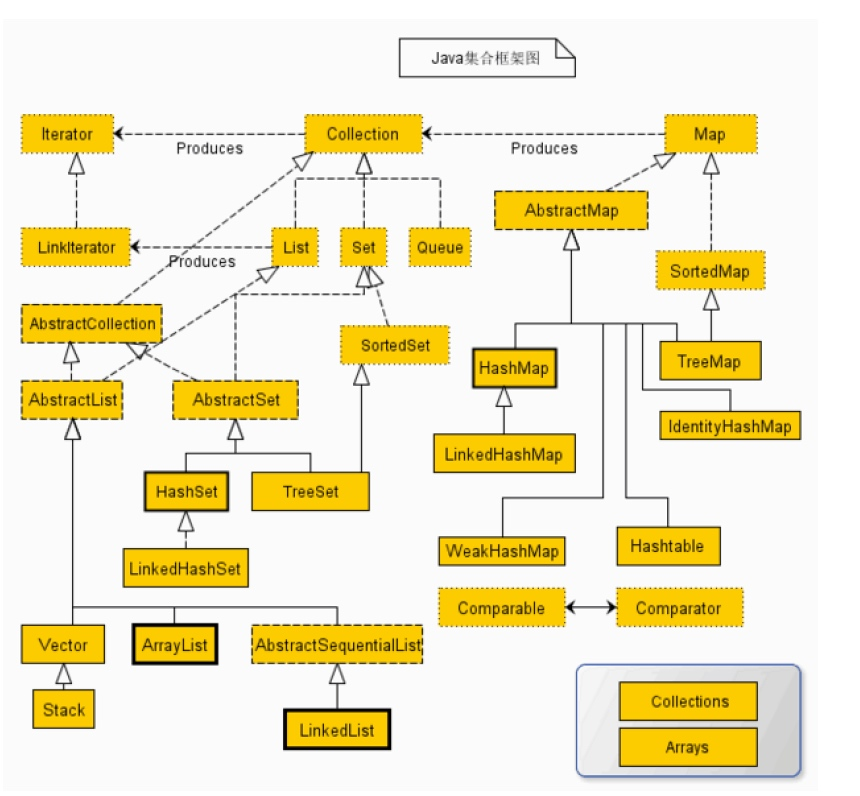

Java中的Object对象
Java把现实中的任何事物都当做一个对象（Object），Java是面向对象的，就是Object-Oriented简称OO
Object在Java中被定义为一个顶级父类，它是任何类的父类，我们可以显示的继承它，也可以隐式继承
Object类中定义的常用方法
equals(Object obj)
equals()方法与==的区别：

==比较的是两个引用的值，即两个对象的地址。两次创建的对象是相互对立的，都各自分配了独立的内存空间，所有str1 != str2
equals()比较的是两个引用指向的对象的实际的值，涉及到对象的属性和方法。上例中两个对象的值都为Hello，所以str1.equals(str2)

由于Java中String类型是不可变的，也就是说在创建了一个字符串之后，如果想修改这个字符串的值是不能直接在原来的内存中修改存储的，而是需要重新分配一个内存空间用来存放新的内存空间。
String类的这种特性造成在对String对象进行创建或操作时非常浪费内存空间，为了解决这个问题，Java中引出一个字符串池的概念（a pool of String）。即：如果当前准备新创建的字符串对象的值在复用池中已经存在，那么就不在生成新的对象，而是复用池中已有的字符串对象，新建的字符串和原来同值的字符串内存地址是相同的。
注意的是，这种字符串池的机制只有采用Object obj ="Hello"方式（而非用new关键字）声明String对象的时候才有效。
hashCode()
Object类中定义了hashCode()方法决定了所有的对象都可以调用其hashCode()方法。
在HashMap的存储实现中，系统会根据对象的hashCode()值来决定每个元素的存储位置。
这个时候会有一个疑问，就是会不会出现两个对象的hashCode()值相同呢？
- 对象相等则hashCode()一定相等；
- hashCode()相等对象未必相等。
hashCode()存储机制中，不同的hashCode()值的对象会被分配到不同的“桶”里面，hashCode()值相同的对象会被放进同一个“桶”里面。在查询的过程中，一般是先遍历所有的桶再遍历桶里面的元素，所以为了能有一个高效的查询效果，我们应该尽可能的让所有的对象都被分配的自己独有的“桶”里面，这样才能最快的实现查询，要实现这样的要求就需要这些对象的hashCode()值不相同。
hashCode()、equals()和==三者的关系
- 如果是基本变量，没有
hashCode()和equals()方法，基本变量的比较方式就只有==。因为他们不是对象，当然是可以通过Java中的包装类将他们转换成对象后还是可以调用hashCode()和equals()()方法。 - 如果是变量，由于在Java中所有变量定义都是一个指向实际存储的一个句柄（你可以理解为c++中的指针），
==是比较句柄的地址（你可以理解为指针的存储地址），而不是句柄指向的实际内存中的内容，- 如果要比较实际内存中的内容，那就要用
equals()方法， - 但是如果是我们自己定义的一个类，比较自定义类用
equals()和==是一样的，都是比较句柄地址，因为自定义的类是继承于Object，而Object中的equals()就是用==来实现的，所以在自定义类的情况下重写equals()方法会是一个良好的习惯，否则失去了equals()方法存在的意义了。 - 那为什么我们用的String等等类型
equals()是比较实际内容呢，是因为String等常用类已经重写了Object中的equals()方法，让equals()来比较实际内容。
hashCode()在一般的应用中我们不需要了解hashCode()的用法，但当我们用到HashMap，hashset等集合类时要注意下hashCode()。我们想通过一个Object的key来拿HashMap的value，HashMap的工作方法是，通过你传入的Object的hashCode()在内存中找地址，当找到这个地址后再通过equals()()方法来比较这个地址中的内容是否和你原来放进去的一样，一样就取出value。- 所以这里要匹配2部分，
hashCode()和equals()。但假如说我们new一个Object作为key去拿value是永远得不到结果的，因为每次new一个Object，这个Object的hashCode()是永远不同的，所以我们要重写hashCode()，你可以令你的hashCode()是Object中的一个恒量，这样永远可以通过你的Object的hashCode()来找到key的地址，然后你要重写你的equals()方法，使内存中的内容也相等
首先，从语法角度，也就是从强制性的角度来说，hashCode()和equals()是两个独立的，互不隶属，互不依赖的方法，equals()成立与hashCode()相等这两个命题之间，谁也不是谁的充分条件或者必要条件。
但是，从为了让我们的程序正常运行的角度，我们一定要（正确）重载hashCode()，使得equals()成立的时候，hashCode()相等，也就是
a.equals(b) -> a.hashCode()== b.hashCode()
总结一下，equals()是对象相等性比较，hashCode()是计算对象的散列值，当然他们的依据是对象的属性。
对于equals()，一般我们认为两个对象同类型并且所有属性相等的时候才是相等的，在类中必须改写equals()，因为Object类中的equals()只是判断两个引用变量是否引用同一对象，如果不是引用同一对象，即使两个对象的内容完全相同，也会返回false。当然，在类中改写这个equals()时，你也可以只对部分属性进行比较，只要这些属性相同就认为对象是相等的。
对于hashCode()，只要是用在和哈希运算有关的地方，和equals()一样，在你的类中也应该改写。当然如果两个对象是完全相同的，那么他们的`hashCode()当然也是一样的，但是象前面所述，规则可以由你自己来定义，因此两者之间并没有什么必然的联系。
当然，大多数情况下我们还是根据所有的属性来计算hashCode()和进行相等性比较。
Reference
http://blog.chinaunix.net/uid-26981819-id-4462638.html
http://www.cnblogs.com/I-am-Betty/archive/2010/09/06/1819375.html
Java基础之集合

一、HashSet
HashSet实现Set接口。HashSet中不允许有重复元素，这是因为HashSet是基于HashMap实现的，HashSet中的元素都存放在HashMap的key上面，而value中的值都是统一的一个private static final Object PRESENT = new Object();。HashSet跟 HashMap一样，都是一个存放链表的数组。具体看下HashSet怎样实现不允许有重复元素的。
/*
* @param e 将添加到此set中的元素。
* @return 如果此set尚未包含指定元素，则返回true。
*/
public boolean add(E e)
{
return map.put(e, PRESENT)==null;
}
如果此set中尚未包含指定元素，则添加指定元素。更确切地讲，如果此set没有包含满足(e == null ? e2 == null : e.equals(e2))的元素e2，则向此set添加指定的元素e。
如果此set已包含该元素，则该调用不更改set并返回false。底层实际将将该元素作为key放入HashMap。由于HashMap的put()方法添加key-value对时，当新放入HashMap的Entry中key与集合中原有Entry的key相同（hashCode()返回值相等，通过equals比较也返回true），新添加的Entry的value会将覆盖原来Entry的value，但 key不会有任何改变，因此如果向HashSet中添加一个已经存在的元素时，新添加的集合元素将不会被入HashMap中，原来的元素也不会有任何改变，这也就满足了Set中元素不重复的特性。
总结：不允许重复元素的本质是：当插入元素存在时，表面上看起来HashSet返回的是false，实际上执行的操作是原值被相同的值再覆盖一遍。
二、ArrayList
ArrayList 继承了AbstractList ，实现了List 。它是一个数组队列，相当于动态数组，提供了相关的添加、删除、修改、遍历等功能。
每个ArrayList 实例都有一个容量，该容量是指用来存储列表元素的数组的大小。它总是至少等于列表的大小。随着向ArrayList 中不断添加元素，其容量也自动增长。自动增长会带来数据向新数组的重新拷贝，因此，如果可预知数据量的多少，可在构造ArrayList 时指定其容量。在添加大量元素前，应用程序也可以使用 ensureCapacity 操作来增加ArrayList实例的容量，这可以减少递增式再分配的数量。
注意，此实现不是同步的。如果多个线程同时访问一个ArrayList 实例，而其中至少一个线程从结构上修改了列表，那么它必须保持外部同步。
1、ArrayList构造方法
ArrayList 提供了三种方式的构造器，可以构造一个默认初始容量为 10 的空列表、构造一个指定初始容量的空列表以及构造一个包含指定 collection 的元素的列表，这些元素按照该 collection 的迭代器返回它们的顺序排列的。源码如下：
public ArrayList()
{
this(10);
}
public ArrayList(int initialCapacity)
{
super();
if (initialCapacity < 0)
throw new IllegalArgumentException("Illegal Capacity: " + initialCapacity);
this.elementData = new Object[initialCapacity];
}
public ArrayList(Collection c)
{
elementData = c.toArray();
size = elementData.length;
// c.toArray might (incorrectly) not return Object[] (see 6260652)
if (elementData.getClass() != Object[].class)
elementData = Arrays.copyOf(elementData, size, Object[].class);
}
2、ArrayList 提供的各类方法
a、存储:
set(int index, E element)、add(E e)、add(int index, E element)、addAll(Collection<? extends E> c)、addAll(int index, Collection<? extends E> c)
b、读取：
get(int index)
c、删除：
remove(int index)、remove(Object o)【附：remove(Object o)方法移除此列表中首次出现的指定元素（如果存在），这是应为ArrayList中允许存放重复的元素】
注意：从数组中移除元素的操作，也会导致被移除的元素以后的所有元素的向左移动一个位置。
d、调整数组容量：
每当向数组中添加元素时，都会去检查添加后元素的个数是否会超出当前数组的长度，如果超出，数组将会进行扩容，以满足添加数据的需求。数组
扩容通过一个公开的方法 ensureCapacity(int minCapacity) 来实现。在实际添加大量元素前，也可以使用 ensureCapacity 来手动增加 ArrayList 实例的容量，以减少递增式再分配的数量。
public void ensureCapacity(int minCapacity)
{
modCount++;
int oldCapacity = elementData.length;
if (minCapacity > oldCapacity)
{
Object oldData[] = elementData;
int newCapacity = (oldCapacity * 3)/2 + 1;
if (newCapacity < minCapacity)
newCapacity = minCapacity;
// minCapacity is usually close to size, so this is a win:
elementData = Arrays.copyOf(elementData, newCapacity);
}
}
数组进行扩容时，会将老数组中的元素重新拷贝一份到新的数组中，每次数组容量的增长大约是其原容量的 1.5 倍。这种操作的代价是很高的。因此在实际使用时，我们应该尽量避免数组容量的扩张。当我们可预知要保存的元素的多少时，要在构造 ArrayList 实例时，就指定其容量，以避免数组扩容的发生。或者根据实际需求，通过调用 ensureCapacity 方法来手动增加 ArrayList 实例的容量。
ArrayList 还给我们提供了将底层数组的容量调整为当前列表保存的实际元素的大小的功能。它可以通过 trimToSize 方法来实现。
3、Fail-Fast机制：
ArrayList 也采用了快速失败的机制，通过记录 modCount 参数来实现。在面对并发的修改时，迭代器很快就会完全失败，而不是冒着在将来某个不确定时间发生任意不确定行为的风险。
Fail-Fast机制： “快速失败” 也就是 fail-fast，它是 Java 集合的一种错误检测机制。当多个线程对集合进行结构上的改变的操作时，有可能会产生 fail-fast 机制。记住是有可能，而不是一定。例如：假设存在两个线程（线程 1、线程 2 ），线程1通过 Iterator 在遍历集合 A 中的元素，在某个时候线程 2 修改了集合 A 的结构（是结构上面的修改，而不是简单的修改集合元素的内容），那么这个时候程序就会抛出 ConcurrentModificationException 异常，从而产生 fail-fast 机制。】
三、Linkedlist
List 接口的链接列表实现。实现所有可选的列表操作，并且允许所有元素（包括 null）。除了实现 List 接口外，LinkedList 类还为在列表的开头及结尾 get、remove 和 insert 元素提供了统一的命名方法。这些操作允许将链接列表用作堆栈、队列或双端队列。 此类实现 Deque 接口，为 add、poll 提供先进先出队列操作，以及其他堆栈和双端队列操作。 所有操作都是按照双重链接列表的需要执行的。在列表中编索引的操作将从开头或结尾遍历列表（从靠近指定索引的一端）。
private transient Entry header = new Entry(null, null, null);
这个成员变量是LinkedList的关键，它在链表中没有实际数据意义，是链表的标示（通俗一点就是链表的第一个无意义的元素），而且被修饰为 transient，标示着他不会被序列化。header也可以当做队列末尾的元素，因为是双向列表，所以header.next末尾元素后边的元素就成了队首元素，header.previous就是队尾元素了，看一下它的添加方法
public void addFirst(E paramE)
{
addBefore(paramE, this.header.next);//队首
}
public void addLast(E paramE)
{
addBefore(paramE, this.header);//队尾
}
以上两个方法都利用 addBefore 方法将元素添加到指定对象之前，
addFirst 向队头加元素，将元素paramE添加到header.next-队首元素之前；
addLast 向队尾加元素，将元素paramE添加到header之前。
链表的基本特性是插入速度快，遍历速度慢。
LinkedList 的方法 entry(int index) 类似 ArrayList 的 get(int index)，源码如下：
/***
* 根据序号获取Entry对象
*/
private Entry entry(int paramInt)
{
if ((paramInt < 0) || (paramInt >= this.size))
{
throw new IndexOutOfBoundsException("Index: " + paramInt + ", Size: " + this.size);
}
Entry localEntry = this.header;
int i;
/***
* 二分法：目标序号小于Size的1/2，则从头到尾
* 如果大于Size的1/2，则从尾到头
*/
if (paramInt < this.size >> 1)
{
for (i = 0; i <= paramInt; i++)
localEntry = localEntry.next;
}
else
{
for (i = this.size; i > paramInt; i--)
localEntry = localEntry.previous;
}
return localEntry;
}
四、 ArrayList 和 LinkedList 的区别
一般大家都知道 ArrayList 和 LinkedList 的大致区别：
1、ArrayList 是实现了基于动态数组的数据结构， LinkedList 基于链表的数据结构。
2、对于随机访问 get 和 set， ArrayList 觉得优于 LinkedList，因为 LinkedList 要移动指针。
3、对于新增和删除操作 add 和 remove， LinedList 比较占优势，因为 ArrayList 要移动数据。
ArrayList 和 LinkedList 在性能上各有优缺点，都有各自所适用的地方，总的说来可以描述如下：
1、对 ArrayList 和 LinkedList 而言，在列表末尾增加一个元素所花的开销都是固定的。对 ArrayList 而言，主要是在内部数组中增加一项，指向所添加的元素，偶尔可能会导致对数组重新进行分配；而对 LinkedList 而言，这个开销是统一的，分配一个内部 Entry 对象。
2、在 ArrayList 的中间插入或删除一个元素意味着这个列表中剩余的元素都会被移动；而在 LinkedList 的中间插入或删除一个元素的开销是固定的。
3、LinkedList 不支持高效的随机元素访问。
4、ArrayList 的空间浪费主要体现在在 list 列表的结尾预留一定的容量空间，而 LinkedList 的空间花费则体现在它的每一个元素都需要消耗相当的空间。可以这样说：当操作是在一列数据的后面添加数据而不是在前面或中间，并且需要随机地访问其中的元素时,使用 ArrayList 会提供比较好的性能；当你的操作是在一列数据的前面或中间添加或删除数据,并且按照顺序访问其中的元素时,就应该使用 LinkedList 了。
五、非同步性（非线程安全）
HashMap、Hashset、ArrayList、LinkedList 都是非同步性的，以 LinkedList 如果多个线程同时访问一个链接列表，而其中至少一个线程从结构上修改了该列表，则它必须保持外部同步。（结构修改指添加或删除一个或多个元素的任何操作；仅设置元素的值不是结构修改。）这一般通过对自然封装该列表的对象进行同步操作来完成。如果不存在这样的对象，则应该使用 Collections.synchronizedList 方法来“包装”该列表。最好在创建时完成这一操作，以防止对列表进行意外的不同步访问，如下所示：
List list = Collections.synchronizedList(new LinkedList(...));
同理，Map 有 Collections.synchronizedMap(Map m) 这个方法可以实现同步。
或者使用synchronized关键字
Reference
http://www.cnblogs.com/xwdreamer/archive/2012/06/03/2532999.html
关于Java集合的小抄
List
ArrayList
以数组实现。节约空间，但数组有容量限制。超出限制时会增加50%容量，用System.arraycopy()复制到新的数组，因此最好能给出数组大小的预估值。默认第一次插入元素时，创建大小为10的数组。
基本优势
按数组下标访问元素get(i) set(i, e)的性能很高。
直接在数组末尾加入元素add(e)的性能也高。
基本劣势
如果按下表插入、删除元素add(i, e) remove(i) remove(e)，则要用System.arraycopy()来移动部分受影响的元素，性能就变差了。
LinkedList
以双向链表实现。链表无容量限制，但本身使用了更多空间，也需要额外的链表指针操作。
基本优势
不需扩容，调整容量
在链表两头的操作add() addFirst() removeLast()能省掉指针的移动
基本劣势
按下标访问元素get(i) set(i, e)要遍历链表，将指针移动到位。如果i>数组大小的一半，会从末尾移起。
CopyOnWriteArrayList
并发优化的ArrayList。用CopyOnWrite策略，在修改时，先复制一个快照来修改，改完再让内部指针指向新数组。
因为对快照的修改对读操作不可见，所以只有写锁没有读锁，加上复制的昂贵成本，典型的适合读多写少的场景。如果更新频率较高，或者数组较大时，还是Collections.synchronizedList(list)，对所有操作用同一把锁来保证线程安全更好。
Map
HashMap
用key的哈希值%桶数组的大小可得到数组下标。
插入元素时，如果两条key落在同一个桶，Entry用一个next属性实现多个Entry以单向链表存放，后入桶的Entry将next指向桶当前的Entry
当Entry数量达到桶数量的75%时，会成倍扩容桶数组，并重新分配所有原来的Entry，所以这两也最好有个预估值。
取模用位运算(hash & (arrayLength-1))会比较快，所以数组的大小永远是2的N次方。默认第一次放入元素时的初始值是16。
在JDK8里，新增默认为8的閥值，当一个桶里的Entry超过閥值，就不以单向链表而以红黑树来存放以加快Key的查找速度。
LinkedHashMap
扩展HashMap，增加了双向链表的实现，号称是最占内存的数据结构。
TreeMap
以红黑树实现。
ConcurrentHashMap
并发优化的HashMap，默认16把写锁（可以设置更多），有效地分散了阻塞的概率，而且没有读锁。
数据结构为Segment[]，Segment里面才是哈希桶数组，每个Segment一把锁。Key先算出它在哪个Segment里，再算出它在哪个哈希桶里。
Set
Set几乎都是内部用一个Map来实现的。
将Map里的KeySet当做一个Set，而Value是假值，全部使用同一个Object。Set的特征也继承了那些内部Map实现的特征。
HashSet：内部就是HashMapLinkedHashSet：内部就是LinkedHashMapTreeSet：内部就是TreeMap的SortedSetConcurrentSkipListSet：内部就是ConcurrentSkipListMap的并发优化SortedSet
Queue
Queue是在两端出入的List，所以也可以用数组或链表来实现。
LinkedList
即是List，也是Queue。它是唯一一个允许放入null值的Queue。
ArrayDeque
以循环数组实现的双向Queue。大小是2的倍数，默认是16。
It represens a queue where you can insert and remove elements from both ends of the queue.
Adding and Accessing Elements
The order in which the elements added to the ArrayDeque are stored internally. ArrayDeque stores the elements in the order in which they are inserted.
You can peek at the element at the head of the queue without taking the element out of the queue.
PriorityQueue
用二叉堆实现的优先级队列，不再是FIFO，而是按元素实现的Comparable接口或传入Comparator的比较结果来出队，数值越小，优先级越高，越先出队。
Reference
Copyright © 2016 Powered by MWeb, Theme used GitHub CSS.